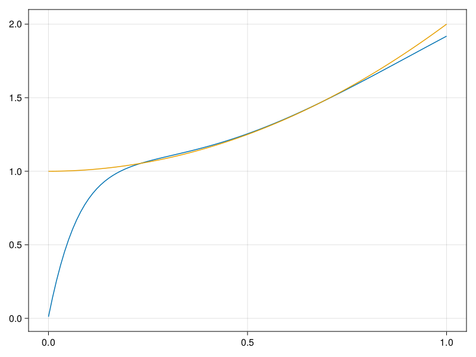

Inverse problem for the wave equation with unknown velocity field
We are going to sovle the wave equation.
using Sophon, ModelingToolkit, IntervalSets
using Optimization, OptimizationOptimJL
@parameters x, t
@variables u(..), c(..)
Dₜ = Differential(t)
Dₜ² = Differential(t)^2
Dₓ² = Differential(x)^2
s(x,t) = abs2(x) * sin(x) * cos(t)
eq = Dₜ²(u(x,t)) ~ c(x) * Dₓ²(u(x,t)) + s(x,t)
bcs = [u(x, 0) ~ sin(x),
Dₜ(u(x, 0)) ~ 0,
u(0, t) ~ 0,
u(1, t) ~ sin(1) * cos(t)]
domains = [t ∈ Interval(0.0, 1.0),
x ∈ Interval(0.0, 1.0)]
@named wave = PDESystem(eq, bcs, domains, [t,x], [u(x,t),c(x)])\[ \begin{align} \frac{\mathrm{d}}{\mathrm{d}t} \frac{\mathrm{d}}{\mathrm{d}t} u\left( x, t \right) =& c\left( x \right) \frac{\mathrm{d}}{\mathrm{d}x} \frac{\mathrm{d}}{\mathrm{d}x} u\left( x, t \right) + \cos\left( t \right) \left|x\right|^{2} \sin\left( x \right) \end{align} \]
Here the velocity field $c(x)$ is unknown, we will approximate it with a neural network.
pinn = PINN(u = FullyConnected((2,16,16,16,1), sin),
c = FullyConnected((1,16,16,1), tanh))
sampler = QuasiRandomSampler(500,100)
strategy = NonAdaptiveTraining(1, (10,10,1,1))NonAdaptiveTraining{Int64, NTuple{4, Int64}}(1, (10, 10, 1, 1))Next we generate some data of $u(x,t)$. Here we place two sensors at $x=0.1$ and $x=0.5$.
ū(x,t) = sin(x) * cos(t)
x_data = hcat(fill(0.1, 1, 50), fill(0.5, 1, 50))
t_data = repeat(range(0.0, 1.0, length = 50),2)'
input_data = [x_data; t_data]
u_data = ū.(x_data, t_data)1×100 Matrix{Float64}:
0.0998334 0.0998126 0.0997503 0.0996464 … 0.275281 0.267213 0.259035Finally we construct the inverse problem and solve it.
additional_loss(phi, θ) = sum(abs2, phi.u(input_data, θ.u) .- u_data)
prob = Sophon.discretize(wave, pinn, sampler, strategy; additional_loss=additional_loss)
@time res = Optimization.solve(prob, BFGS(), maxiters=1000)u: ComponentVector{Float64}(u = (layer_1 = (weight = [-0.8462607890142748 -0.9098409386121686; -0.4565868209048919 1.120419398932881; … ; -0.5155963599983036 -0.06524802449557052; -0.5435638005451865 -0.9124560728128189], bias = [-0.45914450667213474; 0.0834852088694656; … ; 0.050665944276480496; -0.016743456367689365;;]), layer_2 = (weight = [-0.3119594217339138 -0.15167549620785833 … -0.26551800341254905 0.2503875378277857; -0.4943616264198809 0.39487757684828834 … -0.6434969516458077 -0.133574229805609; … ; 0.36028643158107865 0.19128608639158362 … -0.007665320722742516 0.027595352017375882; 0.16281970566654608 -0.22803840713906748 … 0.4764806585675764 0.38644957705157246], bias = [0.20921186972909933; -0.18872017569096833; … ; -0.1102196694703304; -0.08909949684184958;;]), layer_3 = (weight = [0.09302407706355965 0.09682906597325164 … 0.19640445297643755 -0.40342858381508623; 0.2990577092285057 -0.22468847482670387 … 0.22108007278741418 0.6505436417559483; … ; 0.3545579539321846 -0.5717248457215428 … -0.14995603573035124 0.6056350305802441; 0.05780687831248246 -0.4314417455626646 … 0.31128962354246625 0.39688540864971916], bias = [0.02640204814638072; 0.009365624102049625; … ; 0.033600494776795276; -0.09545276633169185;;]), layer_4 = (weight = [0.48036200847060284 -0.2484398227373316 … 0.013865768964978204 0.2250955902954164], bias = [-0.16253185200786932;;])), c = (layer_1 = (weight = [2.1326698455543984; 0.17039043866448542; … ; -0.032736410500735766; 1.841484917486698;;], bias = [0.13054757699423075; 0.2610709919858081; … ; 0.41328221408339644; -0.1414971988518476;;]), layer_2 = (weight = [-0.23273707217119588 -0.2917827342257675 … 0.17199789554310943 -0.4823344563532481; 0.4471746828376776 -0.3359312844725747 … -0.09737678661771797 -0.022615127330003655; … ; -0.02599717114641008 0.24812580181814137 … -0.10296529690414769 0.5392895666552187; -0.06199325534919704 -0.42420125192649627 … -0.25824765087651896 -0.34777814419234526], bias = [-0.035779735881862625; 0.039018669521872995; … ; -0.2636360065840698; -0.07471085658309451;;]), layer_3 = (weight = [-0.06889589509365791 -0.12253798698106913 … 0.25464795672041873 0.6016524861073836], bias = [-0.34573874966712537;;])))Let's visualize the predictted solution and inferred velocity
using CairoMakie
ts = range(0, 1; length=100)
xs = range(0, 1; length=100)
u_pred = [pinn.phi.u([x, t], res.u.u)[1] for x in xs, t in ts]
c_pred = [pinn.phi.c([x], res.u.c)[1] for x in xs]
u_true = [ū(x, t) for x in xs, t in ts]
c_true = 1 .+ abs2.(xs) |> vec
axis = (xlabel="x", ylabel="t", title="Analytical Solution")
fig, ax1, hm1 = heatmap(xs, ts, u_true, axis=axis; colormap=:jet)
ax2, hm2= heatmap(fig[1, end+1], xs, ts, u_pred, axis= merge(axis, (;title = "Prediction")); colormap=:jet)
ax3, hm3 = heatmap(fig[1, end+1], xs, ts, abs.(u_true .- u_pred), axis= merge(axis, (;title = "Absolute Error")); colormap=:jet)
Colorbar(fig[:, end+1], hm3)
fig
fig, ax = lines(xs, c_pred)
lines!(ax, xs, c_true)
fig